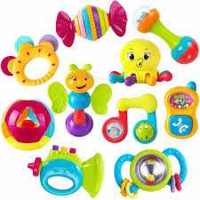
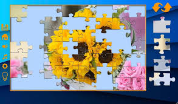
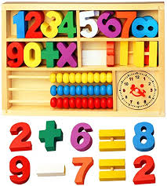
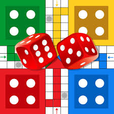

Juguetes físicos.
 Son aquellos juguetes y juegos en los que predomina la velocidad, la fuerza, la resistencia.Son los juegos que el niño normalmente realiza en grupo, con lo que se favorece la relación con los demás.Además, este tipo de juegos le ayudan a pasarlo bien poniendo a prueba sus capacidades físicas y a mejorar el control de su propio cuerpo.Dentro de este tipo de juguetes y juegos se encuentran: la comba, el hula-hop, el escondite, el fútbol, correpasillos, sonajeros, bicis, toboganes, columpios
Juguetes manipulativos.
 Son juguetes que desarrollan el control con los dedos, los reflejos, la precisión, la coordinación ojo-mano, la capacidad auditiva…El niño tiene que encajar o apilar diferentes piezas.Dentro de este tipo de juguetes se enmarcan: construcciones, puzzles, rompecabezas.
Juguetes educativos.
 Este tipo de juguetes proporcionan entretenimiento, disfrute y ayudan a comprender y asimilar contenidos escolares, desarrollan capacidades como la atención, la memoria, el razonamiento, la orientación espacial.En esta línea de juguetes educativos se encuentran: los puzzles, la sopa de letras, videojuegos didácticos, juegos de preguntas y respuestas.
Juegos de grupo.
 Los juguetes y juegos de grupo o cooperativos estimulan en el niño la comunicación en el grupo, la aceptación de los demás, incrementan el grado de participación en actividades del colegio.El juego cooperativo favorece el contacto físico positivo y reduce el contacto negativo, así como las comunicaciones verbales negativas. Estimula la cooperación y la generosidad, vuelve al niño pro-social.